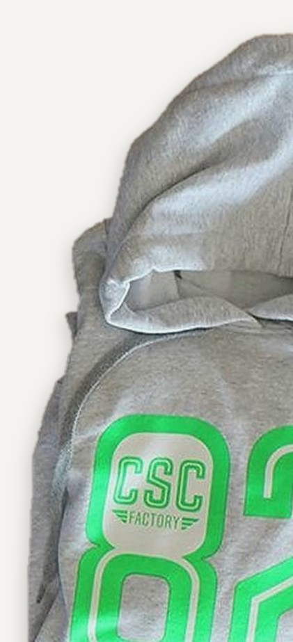
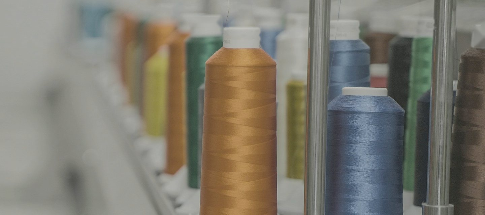
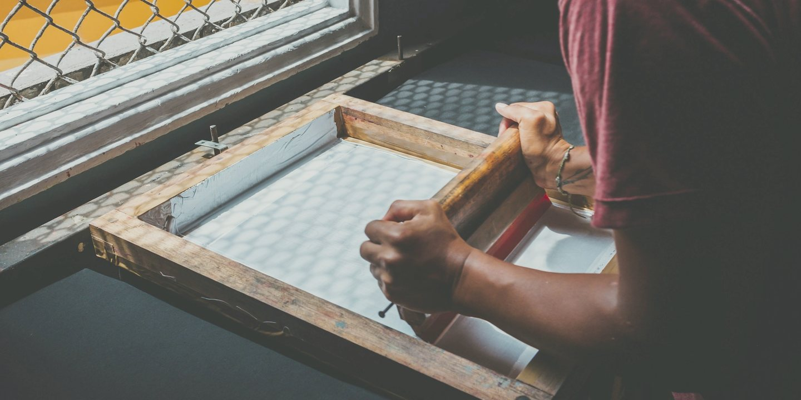
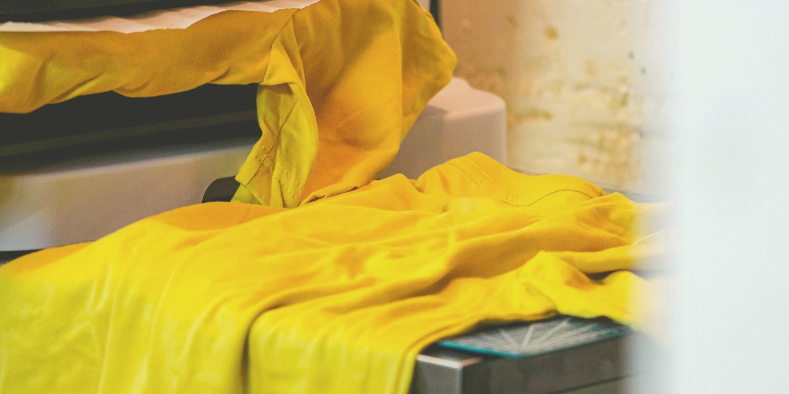
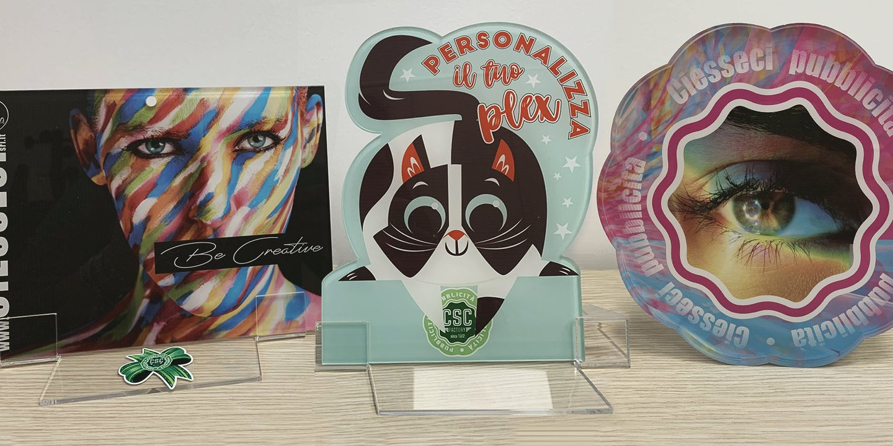
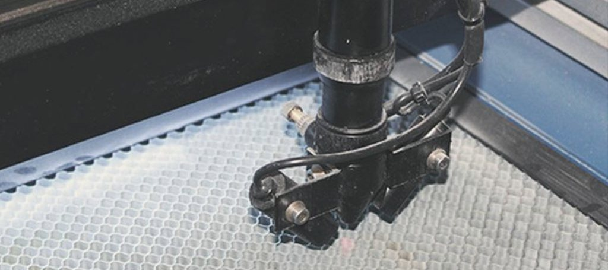
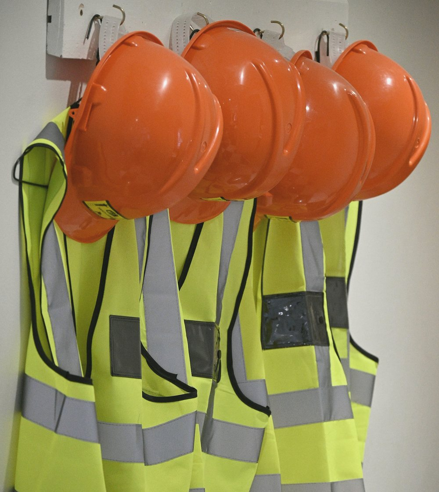
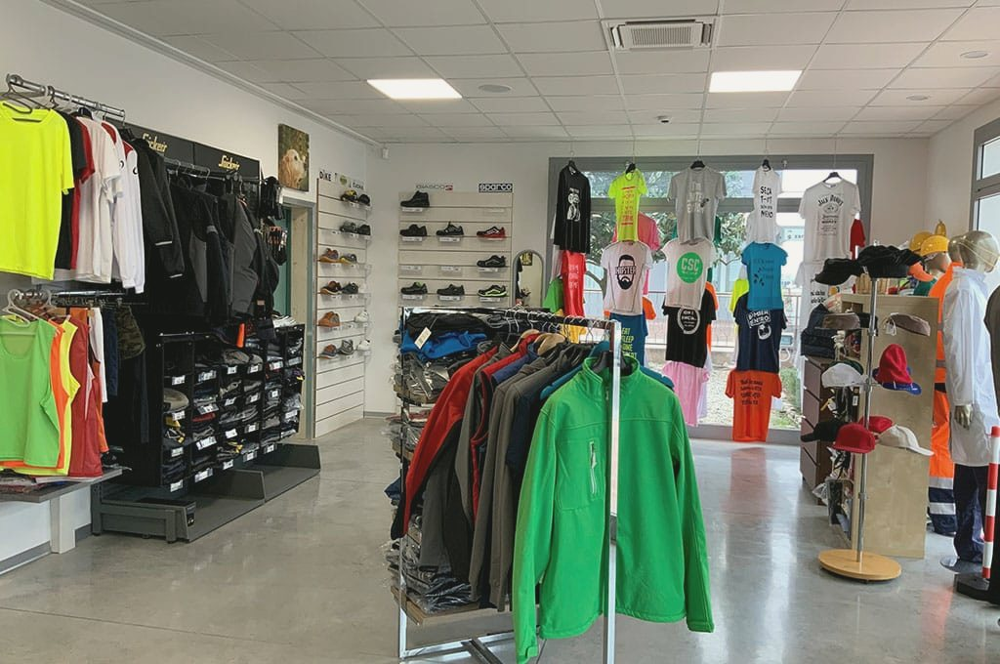

Stampa e ricamo:
diffondiamo
il tuo brand.
Dal 1982 stampiamo su supporti anche di grandi dimensioni e personalizziamo abbigliamento promozionale e da lavoro. Negozio, showroom e laboratorio a Mestrino, Padova.

La felpa CSC Factory: il 1982 stampato come un numero di maglia.
Su tessuto, plex, legno e metallo
Undici lavorazioni per mettere il tuo marchio su un capo, un furgone, una targa o uno zerbino. Cinque, da vicino:

«Perfetto per farti riconoscere e creare appartenenza tra i tuoi dipendenti o gli associati.»
DoveAbbigliamento da lavoro e per il tempo libero. Il ricamo personalizzato ha anche un marchio suo, RicaMarty.
Il ricamo

«La stampa serigrafica avviene su tessuto, pelli, tnt, e su materiali rigidi come plex, legno, metallo e altro.»
DoveMagliette, felpe, shopper in tnt, pannelli rigidi.
La serigrafia

«Un effetto non in rilievo e impalpabile, modificando direttamente la tinta del tessuto.»
ColoriNon ci sono limiti di colore.
La sublimazione

«Stampa il tuo messaggio su qualsiasi supporto fino a spessori di 50 mm.»
SupportiPVC, policarbonato, tessuti, legno, forex, plexiglass, pvc adesivo. Il plex anche con taglio su misura, su singolo pezzo.
La stampa UV

«Plexiglas, targhe, portachiavi, ma anche penne, matite in legno, penne per touchscreen, pendrive USB.»
OggettiTarghe, portachiavi e gadget con il tuo marchio.
L'incisione laser

Centinaia di capi, scarpe e DPI in showroom
Salopette, giacche da lavoro, camicie, polo, felpe, giubbini, grembiuli; calzature antinfortunistiche e capi per il tempo libero, sia al dettaglio che all'ingrosso.
Su richiesta mettiamo anche il tuo nome e quello dei tuoi dipendenti.
Chi siamo
Ciesseci nasce nel 1982 da tre amici, in un piccolo laboratorio casalingo a Rubano.
Rubano
Il primo laboratorio, in casa.
Via Zanella 1, Mestrino
Negozio, showroom e laboratorio, inaugurati il 23 febbraio.
Aziende
Abbigliamento da lavoro e calzature con il vostro marchio, e il nome di chi li indossa.
PreventivoAssociazioni
Sportive e culturali, o la tua band: maglie, felpe, striscioni e gadget.
LavorazioniPrivati
Lo shop online: t-shirt, tazze, quadri e idee regalo. Spediamo in tutta Italia.
ShopRicaMarty
Il nostro marchio dedicato all'arte del ricamo personalizzato.
RicaMarty
Ti aspettiamo a Mestrino
Per visitare lo showroom e scegliere tra centinaia di capi da lavoro, calzature antinfortunistiche e abbigliamento per il tempo libero.
Cellulare 327 8831747 · WhatsApp
Via Zanella 1, 35035 Mestrino (PD) · Apri la mappa
Da lunedì a venerdì 8:00-12:30 e 14:00-18:30
Sabato 8:00-11:00
